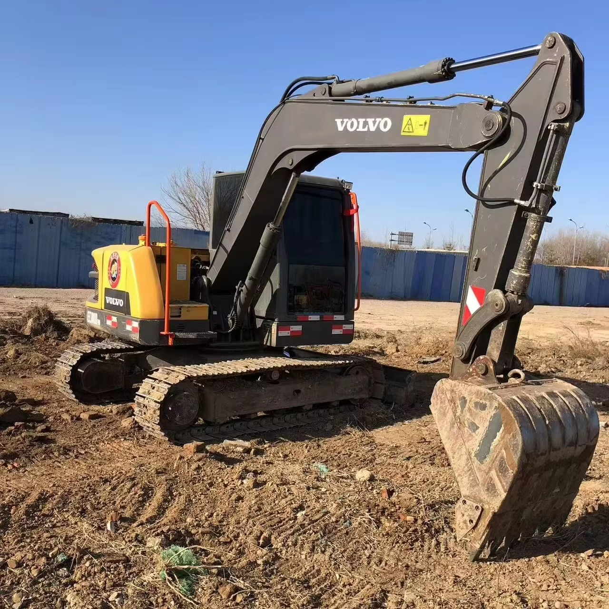

Refurbished Volvo EC80 Excavator
The Volvo EC80 is a small but powerful hydraulic excavator designed to provide exceptional performance in tight spaces. It is ideal for various applications in construction, landscaping, road work, and utility work. With a combination of robust engineering, excellent fuel efficiency, and ease of operation, the EC80 is a top choice for projects that require precision, power, and maneuverability in confined environments. When looking for a cost-effective option without sacrificing quality, a refurbished Volvo EC80 Excavator offers an excellent balance of affordability and reliability.
Honestly, it's almost impossible to buy a brand new excavator from China. They either don't exist or are made in China. If a Chinese seller tells you their Caterpillar/Komatsu/Volvo/Kobelco/Hitachi is brand new, they're lying. Therefore, a refurbished excavator is your best bet.

Here are the detailed specifications for a refurbished Volvo EC80D Pro excavator:
Operating Weight and Dimensions
- Operating Weight: 8,300–8,500 kg
- Transport Length: ~6.17 meters
- Transport Width: ~2.3 meters
- Transport Height: ~2.66 meters
- Tail Swing Radius: ~1.6–1.8 meters
- Ground Clearance: ~400 mm
- Track Width: 450 mm standard
Engine and Powertrain
- Engine Model: Volvo D3 diesel engine (Tier 3 compliant)
- Rated Power Output: ~44.4 kW (59.6 hp) @ 2,000 rpm
- Maximum Torque: ~240–260 Nm
- Fuel Tank Capacity: ~130–150 liters
- Travel Speed: 2.6–5.1 km/h
- Swing Speed: ~10 rpm
- Gradeability: Up to 35% (≈19.3°)
Hydraulic System
- Main Pump Type: Variable displacement axial piston pump
- Flow Rate: ~2 × 100–110 L/min
- System Pressure: Up to 27.5 MPa
- Hydraulic Oil Capacity: ~140–160 liters
- Boom Cylinder Bore: ~105 mm
- Arm Cylinder Bore: ~90 mm
- Bucket Cylinder Bore: ~80 mm
Performance Metrics
- Bucket Capacity: 0.31–0.37 m³ (SAE heaped); standard ~0.34 m³
- Max Digging Depth: ~4.1 meters
- Max Reach (Horizontal): ~6.42 meters
- Max Dump Height: ~4.6–4.8 meters
- Bucket Digging Force: ~55 kN
- Arm Digging Force: ~40 kN
Cab and Operator Features
- Cab Type: ROPS/FOPS certified
- Display: LCD monitor with diagnostics and fuel tracking
- Controls: Pilot-operated joysticks with auxiliary hydraulic circuit
- Comfort: Adjustable suspension seat, air-conditioning standard
- Visibility: Large glass area, rear-view camera, LED work lights
Smart Features and Efficiency
- Fuel Efficiency:
- Auto idle and automatic engine shutdown
- Enhanced hydraulic system matched to engine output
- Emissions Control: Tier 3 compliant (no DPF/SCR)
- Telematics Ready: Volvo CareTrack system (optional)
- Tractive Force: Optimized for slope climbing and rough terrain
Attachments Compatibility
- Standard Bucket: 0.34 m³
- Optional Tools: Hydraulic breaker, auger, compactor, ripper
- Quick Coupler: Hydraulic or manual options available
Refurbishment Scope
Refurbished EC80 units typically include:
- Engine Overhaul: Turbocharger, injectors, seals, cooling system
- Hydraulic Restoration: Pump recalibration, valve block testing, hose replacement
- Electrical Diagnostics: Monitor, sensors, wiring harness
- Cab Reconditioning: Seat, joysticks, HVAC, repainting
- Structural Repairs: Boom/bucket welding, bushing replacement, undercarriage rebuild
Overview of the Volvo EC80 Excavator
The Volvo EC80 is a compact hydraulic excavator that offers outstanding power for digging, lifting, grading, and trenching. Despite its small size, it is engineered to perform effectively on larger, more demanding tasks while offering the convenience of a small footprint. Its design makes it easy to transport, work in tight spaces, and deliver results efficiently.
Key Specifications of the Volvo EC80
-
Operating Weight: Approximately 8,000 kg (17,637 lbs)
-
Engine Power: Around 55 kW (73.8 hp)
-
Max Digging Depth: Up to 4.6 meters (15.1 feet)
-
Max Reach: Approximately 6.8 meters (22.3 feet)
-
Bucket Capacity: Ranges between 0.3 to 0.4 cubic meters (10.6–14.1 cubic feet)
-
Fuel Tank Capacity: About 140 liters (37 gallons)
-
Travel Speed: Up to 5.4 km/h (3.4 mph)
These specifications allow the Volvo EC80 to efficiently tackle smaller yet essential tasks across various industries. Its compact dimensions and performance make it a standout option for contractors who need versatility and power on confined worksites.
Engine and Fuel Efficiency
Powered by a Volvo D2.6E engine, the EC80 offers reliable performance and excellent fuel efficiency. The engine is designed to reduce fuel consumption, minimize emissions, and provide optimal power for various tasks.
-
Fuel-Efficient Operation: The EC80’s engine is optimized to provide ample power while consuming less fuel. This makes it a cost-effective solution for contractors looking to reduce operational costs while maintaining high productivity.
-
Low Emissions: In line with environmental standards, the Volvo EC80 operates with reduced emissions, ensuring compliance with modern regulatory requirements. This is particularly important for working in areas where emissions restrictions are strict.
-
Reliable Engine Power: The D2.6E engine delivers smooth and consistent power, ensuring reliable operation for long periods. The engine is designed to withstand the demands of heavy-duty applications, making it ideal for a wide range of tasks.
Hydraulic System and Performance
The Volvo EC80 is equipped with an advanced hydraulic system designed for smooth operation, precision control, and excellent lifting capacity. The hydraulic system ensures that the excavator performs efficiently even in demanding environments.
-
Efficient Hydraulic System: The EC80 features a load-sensing hydraulic system that adjusts flow rates based on work conditions. This system ensures that fuel consumption is minimized while optimizing performance, making the machine both efficient and cost-effective.
-
Precise Control: The EC80 offers responsive controls, allowing operators to execute tasks such as grading, trenching, and lifting with exceptional precision. This capability is especially useful when working in confined spaces or areas requiring high accuracy.
-
Versatility: The hydraulic system supports a wide range of attachments, including standard buckets, augers, grapples, and hydraulic hammers. This versatility makes the EC80 adaptable to various tasks and industries.
Durability and Construction
The Volvo EC80 is built with durability in mind, ensuring that it can handle tough jobs and last for many years. Its robust construction makes it capable of withstanding harsh working conditions, and its compact design allows it to be maneuvered easily in small spaces.
-
Strong Undercarriage: The EC80 features a durable undercarriage that can handle rough terrain and ensure stability. The tracks are designed to reduce wear and increase service life, minimizing maintenance costs and downtime.
-
Heavy-Duty Frame: The frame, boom, and dipper are constructed from high-strength steel to resist damage and wear. This robust design is crucial for maintaining the integrity of the machine over the long term.
-
Longer Lifespan: With proper care and maintenance, the EC80 is designed to last for many years, making it a wise investment for contractors looking for a reliable and long-lasting piece of equipment.
Operator Comfort and Safety
Volvo understands the importance of operator comfort and safety, and the EC80 is designed to ensure both. The cab is spacious, with an ergonomic layout that prioritizes ease of use and visibility.
-
Ergonomic Operator's Cab: The EC80 features a spacious cab with excellent visibility and an intuitive control layout. The seat is adjustable, allowing operators to find the most comfortable working position. This reduces fatigue, especially during long shifts.
-
Safety Features: The EC80 is equipped with various safety features, including a ROPS (Roll-Over Protective Structure) and FOPS (Falling Object Protective Structure). These features help protect the operator in case of a rollover or falling debris.
-
Enhanced Visibility: The design of the cab, combined with the slim boom profile, provides excellent visibility of the work area. This improves operator awareness and reduces the risk of accidents or damage to the surrounding environment.
Refurbished Volvo EC80: A Cost-Effective Solution
Opting for a refurbished Volvo EC80 excavator provides a significant cost advantage without compromising on performance. Refurbished machines are thoroughly inspected and restored to meet original manufacturer standards, ensuring they perform as reliably as new models.
-
Lower Purchase Price: A refurbished EC80 is typically available at a fraction of the cost of a new machine, making it an affordable option for contractors with budget constraints.
-
High-Quality Restoration: Refurbished Volvo EC80 excavators are restored by certified technicians who inspect all major components, including the engine, hydraulic system, undercarriage, and cab. This ensures that the machine is in optimal working condition.
-
Warranty and Support: Many refurbished units come with warranties and after-sales support, providing peace of mind and ensuring that your investment is protected. This reduces the risk of unexpected repair costs and enhances the longevity of the machine.
Maintenance Tips for the Volvo EC80
To get the most out of a Volvo EC80, regular maintenance is essential. Here are some maintenance tips to ensure the machine runs smoothly:
-
Engine Care: Keep the engine oil at the correct levels and replace the oil and filters regularly. Check the air filters, and replace them as needed to ensure optimal engine performance.
-
Hydraulic System: Regularly check hydraulic fluid levels and inspect the hoses for leaks. Keep the hydraulic system clean and replace any damaged components.
-
Track and Undercarriage Maintenance: Inspect the tracks for wear, and ensure that they are properly tensioned. Clean the undercarriage regularly to remove debris that could cause unnecessary wear.
-
Cab and Safety: Keep the cab clean and check the safety equipment regularly, including the seat belt and ROPS/FOPS structures.
Conclusion
The Volvo EC80 is an outstanding compact excavator that offers excellent performance, reliability, and fuel efficiency. With its strong engine, efficient hydraulic system, and durable construction, the EC80 is perfect for a wide range of applications, from construction and landscaping to utility work. A refurbished Volvo EC80 offers a cost-effective solution for businesses looking for a high-quality machine at a reduced price, with the added benefit of extensive inspection and restoration to ensure it is in excellent working condition.
With its versatility, durability, and operator comfort, the Volvo EC80 is a great addition to any contractor’s fleet. Proper maintenance will help extend its lifespan, ensuring that it continues to deliver reliable performance for many years.
Our Commitment
- 2 years / 4000 hours warranty.
- EPA certified.
- No sweatshop labor.
Contacts

- [email protected]
- Youtube Instagram Facebook
- Navigation: G206 (Sishu Bridge) in Changfeng County, Hefei City, Anhui Province, 200 meters north to the east